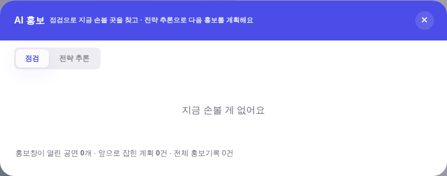
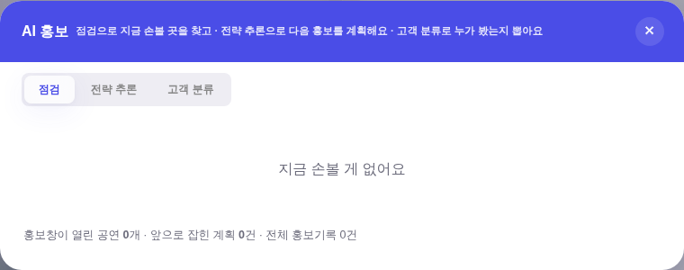
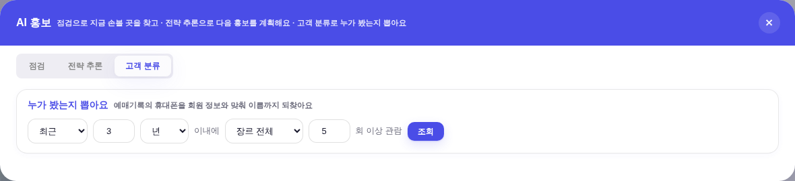
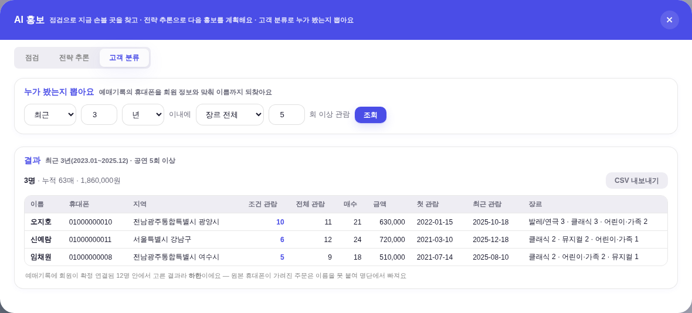
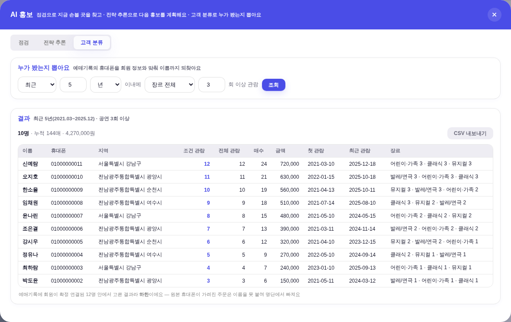

?qa=admin · 하네스 tools/scratch/probe_seg.mjs · 전 = origin/main(c1ff786) · 후 = 본 PR.tools/qa_mock_ops.mjs) — 실데이터·PII 미접촉.




260804_booking_ingest.mjs가 회원키 열에 휴대폰 11자리를 박아둠). 화면은 그 값을 회원 시트 휴대폰정규화로 되짚기만 한다(_segMemIdx()) — 3만×1만 퍼지 매칭을 다시 돌지 않는다.분포는 달력연도만 들고 있어 「3년 이내」가 원리적으로 불가능했다(연 단위 근사만 가능). 260804_booking_agg.mjs의 분포 키를 202312|클래식:2 형태로 바꿨다. 행 수는 안 늘어난다 — 한 사람의 분포 쌍 수는 그 사람 주문 수가 상한이다._bkLoad가 키 길이 4/6으로 갈라서, agg 재실행 전에도 연 단위 근사로 답이 나오고(그 사실을 화면에 적는다) 재실행하는 순간 재배포 없이 월 정밀로 올라간다. 화면이 반입 순서에 안 묶인다.PII_SHEETS 게이트 뒤._bkAnswer와 같은 로컬 전용 축이라 _yeulAiAsk(GitHub Actions 왕복)에 명단이 실리지 않는다._memPurge가 상태(_segLast·_bkAsk)와 이미 그려진 DOM을 함께 지운다(상태만 지우면 화면의 명단은 그대로 남는다).
| 항목 | 전 | 후 |
|---|---|---|
| AI 홍보 탭 | 2 (점검 · 전략 추론) | 3 (+ 고객 분류) |
| 「3년 이내」 질의 | 파싱 실패 → 조용히 전 기간(2020~2025)으로 답 | 최근 3년(2023.01~2025.12) |
| 임의 N년 | 불가(연도 구간·올해·작년만) | 가능 — 5년 → 2021.03~2025.12 |
| 명단(이름) | 없음 — 인원 수만 | 3명(3년·5회) / 10명(5년·3회) · 10열 |
| CSV 내보내기 | 없음 | 12열(주소 3단·장르 분포 포함) |
| raw hex 총량 | 1546 | 1546(무변 — 새 색 0) |
| 잰크 전이 | 15 | 15(무변) |
| 모달 머리줄 정본 | 61개 전건 | 61개 전건 |
| 콘솔 에러 | 0 | 0 |
node docs/260804_booking_agg.mjs 재실행 — 라이브 운영_예매집계는 아직 연 단위다. 재실행해야 월 정밀이 되고, 그전까지 화면은 「연 단위 근사」라고 스스로 밝힌다(값을 지어내지 않는다). YM_PIN이 필요해 세션이 못 돌린다.